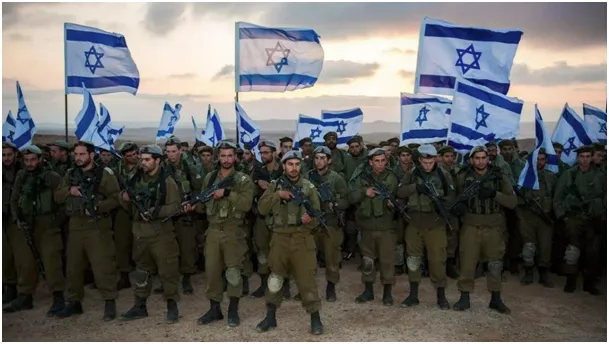
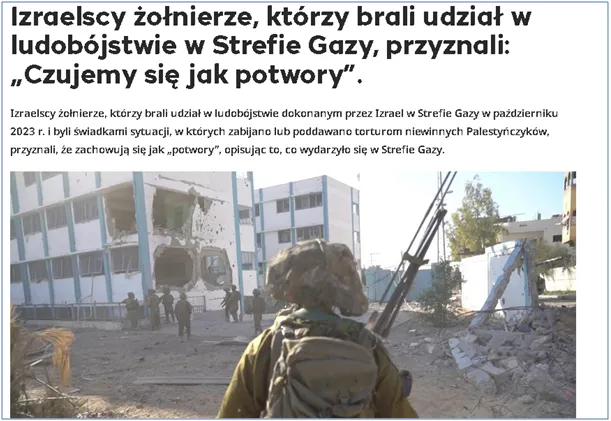
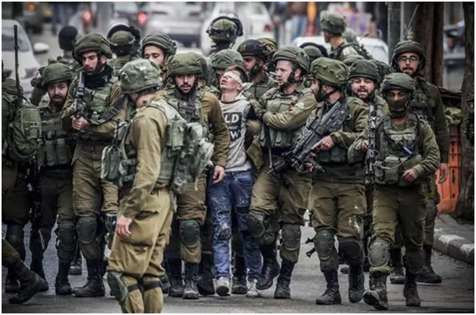
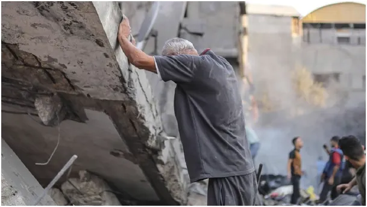
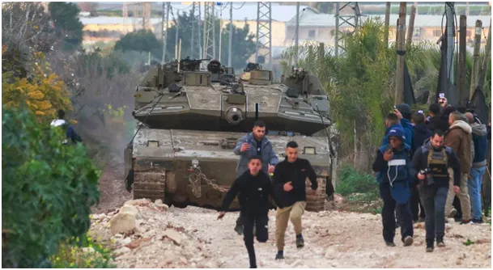

„Czujemy się jak potwory”.
Tłumaczenie z publicznego tureckiego portalu informacyjnego trt-haber tekstu z prasy izraelskiej.
"Izraelscy żołnierze, którzy brali udział w ludobójstwie dokonanym przez Izrael w Strefie Gazy w październiku 2023 r. i byli świadkami sytuacji, w których zabijano lub poddawano torturom niewinnych Palestyńczyków, przyznali, że zachowują się jak „potwory”, opisując to, co wydarzyło się w Strefie Gazy.
Izraelska gazeta Haaretz: Osoby, które brały udział w ludobójstwie w Strefie Gazy i mają problemy ze zdrowiem psychicznym.

...
W materiale informacyjnym, zawierającym zeznania żołnierzy, którzy byli świadkami zabijania i torturowania tysięcy palestyńskich cywilów w Strefie Gazy, stwierdzono, że izraelscy żołnierze wahali się mówić o tym, co działo się z ludźmi wokół nich, i stale zdawali sobie sprawę z konsekwencji swoich działań. „To był starszy Palestyńczyk i trójka dzieci. Otworzyliśmy ogień jak szaleni”.

Według raportu, w grudniu 2023 roku żołnierz o pseudonimie „Yuval”, służący w Chan Junis w południowej Strefie Gazy, zeznał, że „otworzyli ogień jak szaleni” do grupy Palestyńczyków wykrytej przez drony w pobliżu ulicy Salah ad-Din. Yuval zeznał: „Był tam starzec i troje dzieci, prawdopodobnie nastolatków. Żadne z nich nie było uzbrojone. Ich ciała były podziurawione kulami; ich narządy wewnętrzne były rozlane”.
Yuval opowiadał, że po incydencie dowódca batalionu, który przybył na miejsce, pluł na ciała zabitych palestyńskich cywilów i krzyczał wulgaryzmy, mówiąc: „Tak się dzieje z tymi, którzy zadzierają z Izraelem...”.
Yuval oświadczył, że milczał na temat tego incydentu, a jego przyjaciele nazwali go „bohaterem”, gdy go wypisano ze szpitala, ale dodał: „Czułem się jak potwór”. Yuval stwierdził, że specjalne metody stosowane w tunelach w Gazie przypominają mu Holokaust i dodał, że po masakrze w szpitalu Shifa cały obszar wypełnił się zapachem zwłok.

Cywile palestyńscy zostali zabici i pochowani za pomocą koparek. Izraelska żołnierka o pseudonimie „Maja” powiedziała również, że była świadkiem zabijania niewinnych Palestyńczyków w Strefie Gazy i doświadczyła „wstrząsających wydarzeń, które sprawiłyby, że krzyczałaby i płakała”, gdyby przeczytała o nich w gazecie.
Maya opowiedziała o incydencie w południowej Strefie Gazy, gdzie pięciu Palestyńczyków wkroczyło na „zakazany” teren, a dowódca batalionu wydał rozkaz otwarcia ognia, nie potwierdzając, czy byli uzbrojeni. Stwierdziła, że czołgi otworzyły ogień do tych Palestyńczyków. Maya wyjaśniła również, że kilka godzin później udali się na ten teren i pochowali zmarłych palestyńskich cywilów za pomocą koparki.
Palestyńczyk, który przeżył atak, został poddany okrutnym torturom na komisariacie policji.
Maya opowiadała, że jedynego żyjącego Palestyńczyka zabrano na komisariat policji i poddano okrutnym torturom, że żołnierz oddał na niego mocz i że wszyscy żołnierze, łącznie z nią, śmiali się z tego incydentu.
Maya stwierdziła, że w życiu cywilnym prezentowała się jako moralnie uczciwa Izraelka, która brała udział w protestach jako wolontariuszka niosąca pomoc uchodźcom.
Armia izraelska uznała zabitego cywila za „terrorystę”.
„Yehuda”, żołnierz służący na tym samym komisariacie policji co Maya, powiedział, że Palestyńczyk podszedł do komisariatu i gdy funkcjonariusze wyszli, żeby go złapać, mimo że Palestyńczyk podniósł ręce do góry, jeden z funkcjonariuszy rozkazał zastrzelić nieuzbrojonego mężczyznę bez zadawania pytań.
Jehuda później poinformował, że dowództwo otrzymało informację, że „w incydencie zginął jeden terrorysta”.
W raporcie zaznaczono również, że według niektórych żołnierzy Palestyńczycy byli wykorzystywani jako żywe tarcze, a ich domy były rabowane.

Gazeta zacytowała słowa izraelskiego żołnierza: „Wchodziliśmy do palestyńskich domów, a ludzie zdawali się czerpać przyjemność z niszczenia. Sprzęt elektryczny żołnierzy… „Widziałem, jak zabierali naszyjniki, gotówkę, wszystko. Niektórzy mówili, że wszyscy Arabowie to naziści i że okradanie nazistów to błogosławieństwo”. Piloci izraelscy chcieli zostać zwolnieni ze swoich obowiązków po popełnionych masakrach.
„Ran”, żołnierz, który służył w jednostce planującej ataki powietrzne w Tel Awiwie, powiedział: „Planowaliśmy i uzyskiwaliśmy zgodę na ataki, o których wiedzieliśmy, że zginą dziesiątki, a czasem więcej cywilów”.
Ran stwierdził, że to, co działo się w Strefie Gazy, stało się dla nich „czymś tak normalnym, że mogli pojechać do Tel Awiwu, żeby zjeść hamburgery krótko po ataku, w którym zginęłyby dzieci”. Dodał, że noc, w której Izrael złamał zawieszenie broni 18 marca 2025 r. i wznowił intensywne ataki na Strefę Gazy, była momentem kryzysowym.
Ran powiedział, że zdecydował się opuścić stanowisko tej nocy, kiedy setki Palestyńczyków, głównie kobiety i dzieci, zginęły w izraelskich bombardowaniach. Dodał, że nie był jedyny; wielu izraelskich pilotów również chciało opuścić swoje stanowiska po tych wydarzeniach. Ran oświadczył, że izraelskie siły powietrzne przyjęły te prośby, ale poprosiły o zachowanie tajemnicy."
Źródło: https://www.trthaber.com/haber/dunya/gazzedeki-soykirima-katilan-israil-askerlerinden-canavar-gibi-hissediyoruz-itirafi-942218.html